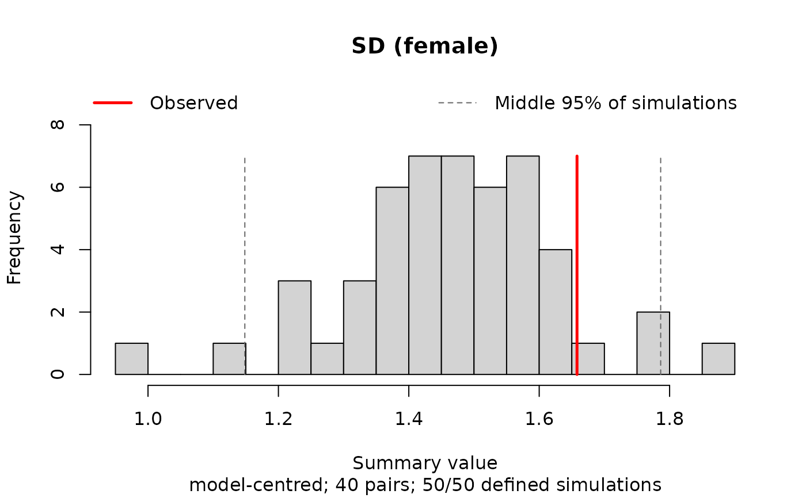
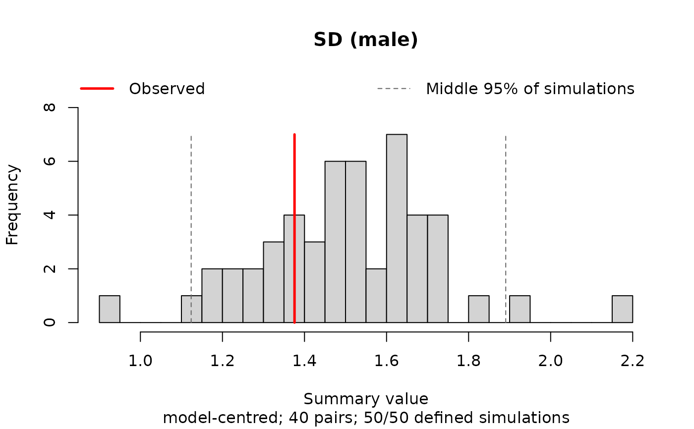
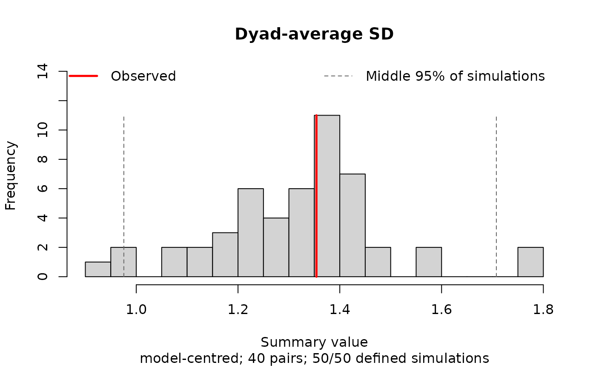
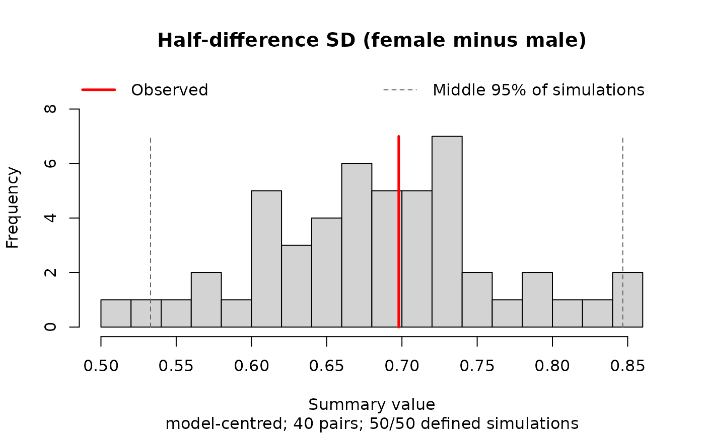
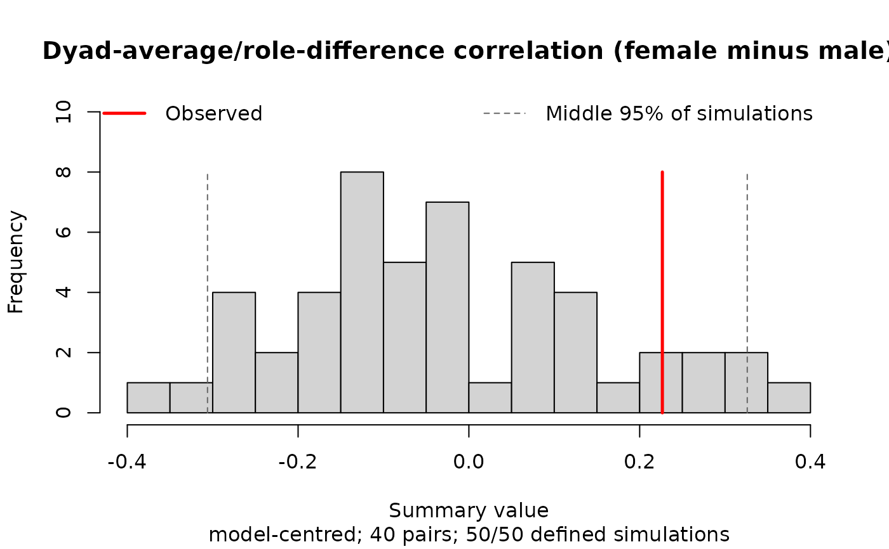
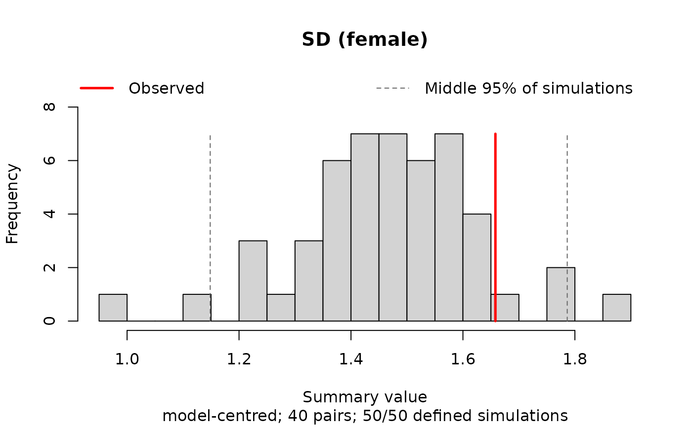
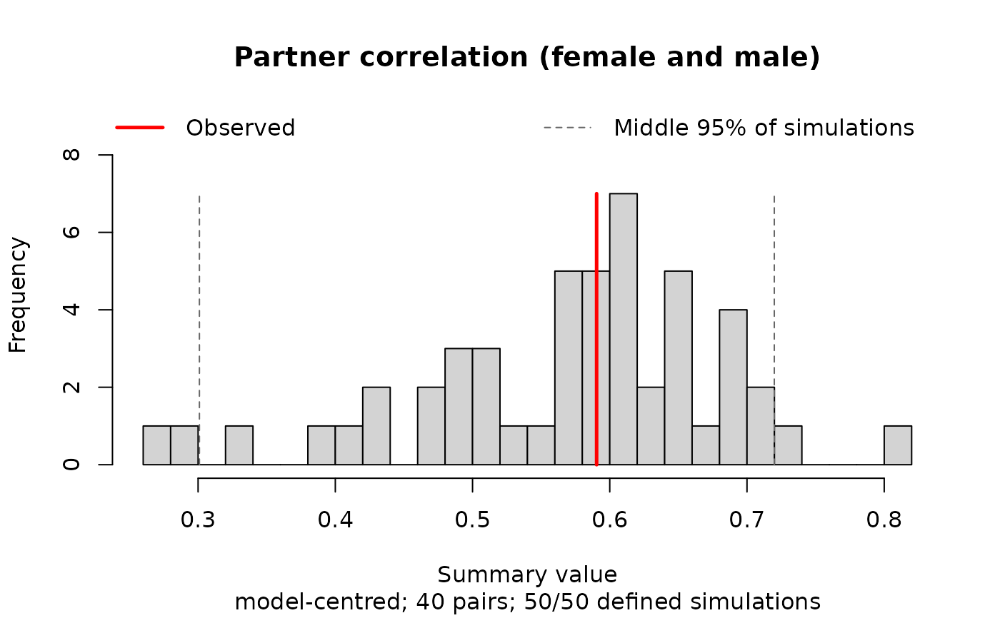
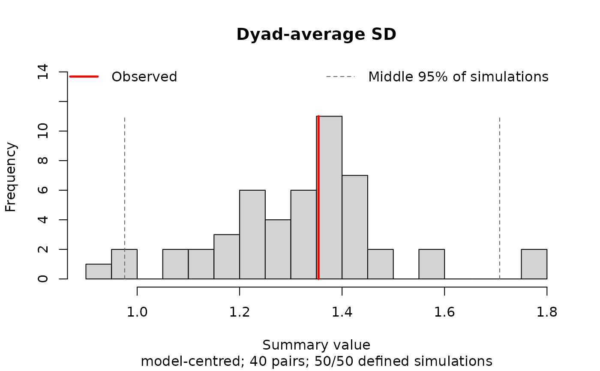
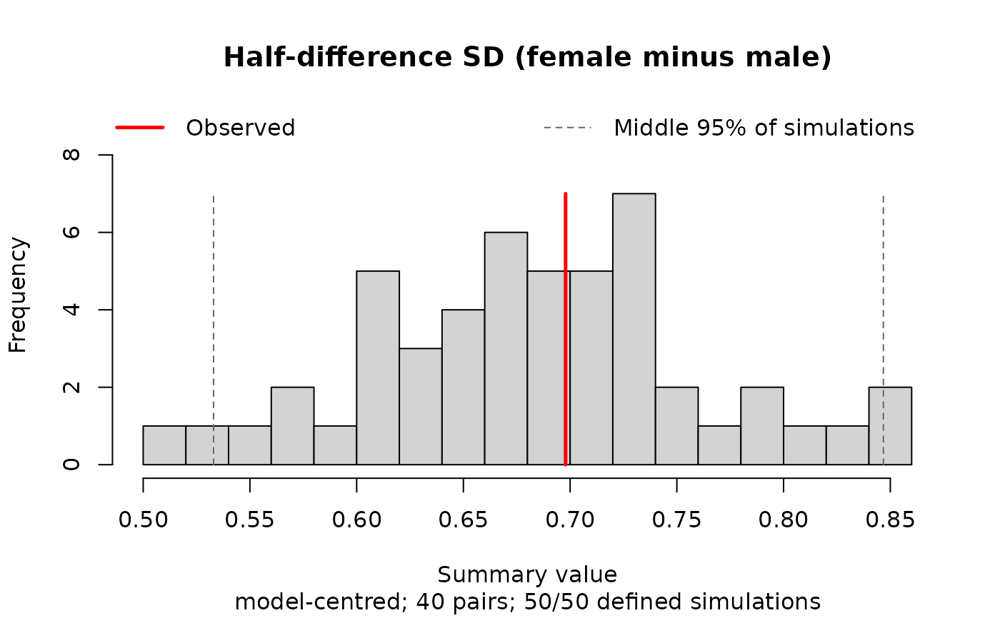
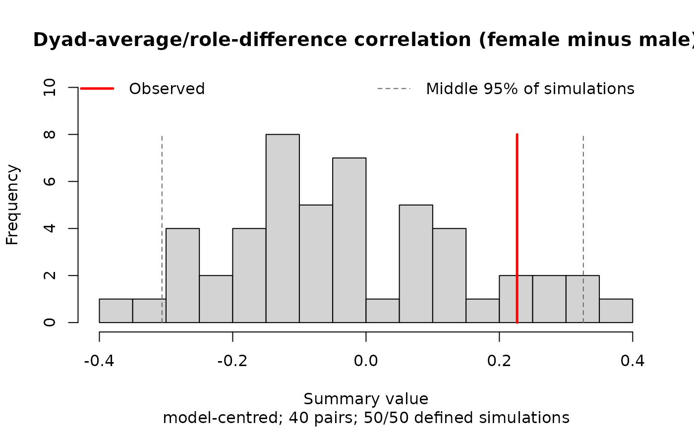

Check whether a fitted model reproduces partner dependence
Source:R/predictive_checks_dependence.R
check_partner_dependence.Rd![[Experimental]](figures/lifecycle-experimental.svg) A dyadic model should reproduce how much responses vary and how strongly
partners' responses are related. This check computes variances and correlations
of simulated responses based on the model and compares them to the observed
response variances and correlations from the data.
This helps identify mismatches in the model's assumptions.
A dyadic model should reproduce how much responses vary and how strongly
partners' responses are related. This check computes variances and correlations
of simulated responses based on the model and compares them to the observed
response variances and correlations from the data.
This helps identify mismatches in the model's assumptions.
Usage
check_partner_dependence(
simulations,
dyad,
role = NULL,
plot = TRUE,
response = c("model-centred", "raw"),
ask = NULL
)Arguments
- simulations
An object returned by
simulate_dyad_responses().- dyad
A column name in the fitted data, or a vector of dyad IDs in the same row order. Columns take precedence. You may use
.env$idsto select an external vector explicitly.- role
A column name in the fitted data, or a vector of roles in the same row order. Use
NULL(default) when members should be treated as exchangeable. Roles can be supplied even if they were not included in the model, to check for mismatches in each role's variance and the partner correlation.- plot
If
TRUE(default), draw the comparison plots for visual checks.- response
"model-centred"(default) subtracts the same model predictions from observed and simulated responses. The predictive check then assesses whether the model reproduces the variance and partner correlations remaining after accounting for its fixed-effect predictions. This includes random effects and observation-level noise. With"raw", the predictive check assesses whether the full model, including fixed effects, reproduces the overall response variances and partner correlations. Seesimulate_dyad_responses()for how predictions are defined.- ask
Whether to pause between plots.
NULL(default) chooses automatically;TRUEpauses andFALSEdraws without pausing. Ignored whenplot = FALSE.
Value
The comparison plots (shown by default) are the main output. The
function invisibly returns a dyadMLM_partner_check object containing the
observed and simulated statistics (one row per simulation), pair and
omission counts, and settings. Can be saved to plot later.
Reading the plots
Histograms show simulated summaries. Red lines mark observed values. Dashed lines enclose the middle 95% of simulations (no formal confidence intervals).
An observed value far from most simulated values may indicate that the model does not reproduce that feature of the data well.
The first set of plots compares:
Response SDs: one for each role, or one common SD for exchangeable members.
Partner correlation: how strongly partners' responses are related.
The second set shows the same information using dyad averages and partner differences:
Dyad-average SD: how much dyads differ in their average response.
Half-difference SD or RMS: each partner difference is divided by two. With roles, the SD shows how much these signed differences vary across dyads. Without roles, the RMS shows their typical size, regardless of partner order.
Mean/difference correlation: plotted only when roles are supplied, because it depends on how partners are ordered. Positive values indicate greater variance for the first named role. Negative values indicate greater variance for the second.
These checks are particularly useful when a simpler model is needed and a less restricted model does not converge and can't be used for model comparison. It shows how well the simpler model reproduces the observed variances and partner correlations.
Rows with missing IDs or roles and incomplete dyads are omitted with a warning. The warning lists affected dyad IDs and row positions in the fitted data. Long lists are shortened; counts are also shown when printing the result.
Technical details
After any centring, paired responses a and b are used to compute
dyad averages M = (a + b) / 2 and half-differences D = (a - b) / 2.
Roles follow factor levels or sorted values.
Without roles, common member variance is var(M) + mean(D^2) and
partner covariance is var(M) - mean(D^2). Partner correlation is
covariance divided by variance. Half-difference RMS is sqrt(mean(D^2)).
The variance and covariance calculations for exchangeable dyads follow Woody and Sadler (2005).
References
Woody, E., & Sadler, P. (2005). Structural equation models for interchangeable dyads: Being the same makes a difference. Psychological Methods, 10(2), 139-158. doi:10.1037/1082-989X.10.2.139 .
Gelman, A., Meng, X.-L., & Stern, H. S. (1996). Posterior predictive assessment of model fitness via realized discrepancies. Statistica Sinica, 6, 733-807.
Examples
example_data <- dyads_cross[dyads_cross$coupleID <= 40, ]
model <- glmmTMB::glmmTMB(
closeness ~ 1 + gender + (1 | coupleID),
data = example_data
)
# Fewer simulations for a quick example (the default is 1000).
simulations <- simulate_dyad_responses(
model,
nsim = 50,
seed = 123
)
check_partner_dependence(
simulations,
dyad = coupleID,
role = gender
)






# Optionally, suppress plot, store object, and plot later.
check <- check_partner_dependence(
simulations,
dyad = coupleID,
role = gender,
plot = FALSE
)
plot(check, ask = FALSE)






print(check)
#> <dyadMLM partner-dependence check>
#> 6 statistics using 40 complete pairs
#> Response: model-centred
#> Reference: 50 plug-in predictive datasets with new random effects
#> Use plot(x) to view the comparisons.